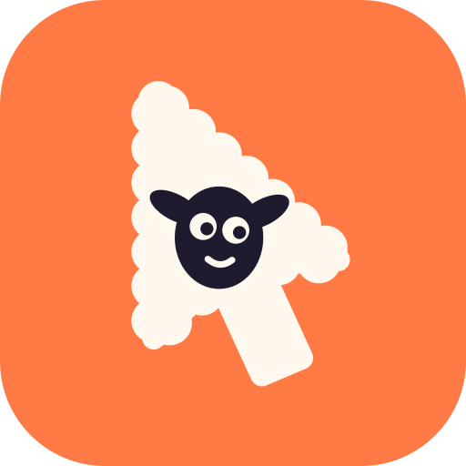

--guard
Refuse unless the named pid, bundle or app is frontmost. A stray move can't click the user's own window — the call exits 3 and posts nothing.

dollymacOS · CLI · built for agents
dolly drives a real pointer through hovers and drags, records one window without stealing focus, and turns the raw take into eased push-ins, pans and pull-backs — every move a number in a shot file.
How it works
Synthetic input is the only way to film hover states and real drag sessions. dolly posts real HID events on an eased clock, copies frames out of one window, and leaves the camera to a script — so a push-in is a number, not a timeline.
Every verb prints one JSON object and takes --guard, so an agent can hover a row, drag a card or press a
menu item and never touch the wrong app. Holds keep hover plates and drop overlays on screen long enough to film.
dolly record copies frames out of one window with screencapture -l — no focus stolen, no other
windows in shot. Four capture loops reach about 60 fps, enough to slow a moment to a third of its speed later.
$ dolly record 61527 /tmp/take 6 --loops 4
{"fps":61.2,"frames":367,"ok":true,"seconds":6.0}
scripts/camera.py crops the high-resolution take along keyframes. The camera follows a monotone spline:
it starts and stops softly, glides through the keyframes in between, and zooms by ratio so a push-in looks even.
$ scripts/camera.py --shot shot.json --explain
{"ok":true,"peak_pan":0.6,"warnings":[]}
Named moves
A shot file lists beats. Each one expands into keyframes; --explain prints them with peak speeds and
warnings before anything renders. Everything below runs the same planner in your browser.
Ease everything
Pointer travel takes --ease inOut|out|inQuint|linear, and camera beats take spline,
smooth, out, in, linear or back. Keep linear for a slow
drift; let everything else start and stop softly.
Any format
The window is padded or cropped onto a canvas of the output aspect. Past the ceiling — canvas width ÷ output width — text would be upscaled, so deeper zooms are clamped and reported. Need more? Record a bigger window.
For agents
--guardRefuse unless the named pid, bundle or app is frontmost. A stray move can't click the user's own window — the call exits 3 and posts nothing.
Every call, even help, prints one object with ok. Pipe it to jq, branch on it,
log it.
0 ok · 2 usage · 3 refused by guard · 4 Accessibility not granted ·
5 failed.
Accessibility belongs to a process. dolly service start registers one trusted process with launchd and
every later call is forwarded to it.
Install
Builds Dolly.app in ~/Applications; an Apple Development identity keeps the grant across rebuilds.
./scripts/install.sh
macOS asks for the Dolly app itself, not your terminal.
~/Applications/Dolly.app/Contents/MacOS/dolly trust --prompt
Then call dolly from any shell or agent.
~/Applications/Dolly.app/Contents/MacOS/dolly service start
Hover, record, then cut a move over the take.
dolly front dolly hover 640,420 --guard 4711 --hold 1.4 dolly record 61527 /tmp/take 6 --loops 4 scripts/camera.py --shot shot.json --strip strip.jpg
The full shot vocabulary and the recording workflow live in
skills/dolly/SKILL.md.